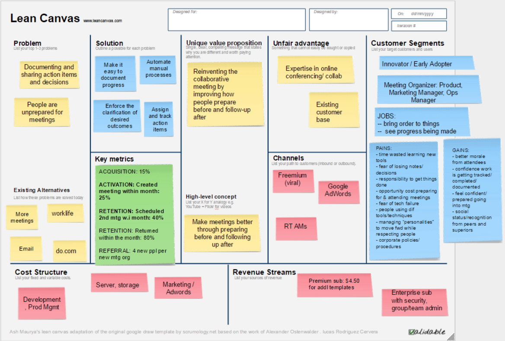
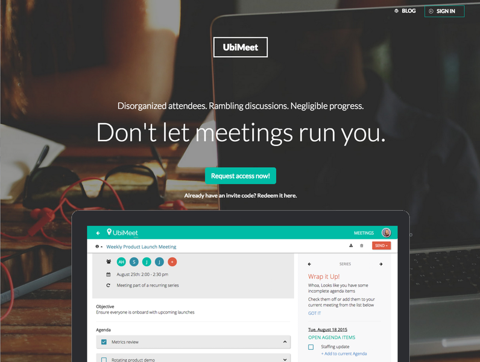
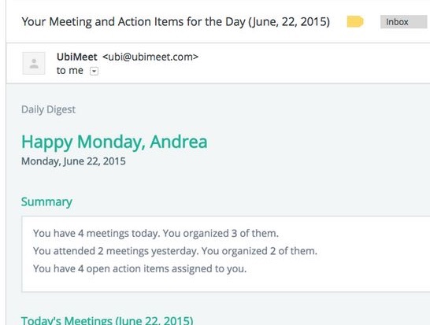
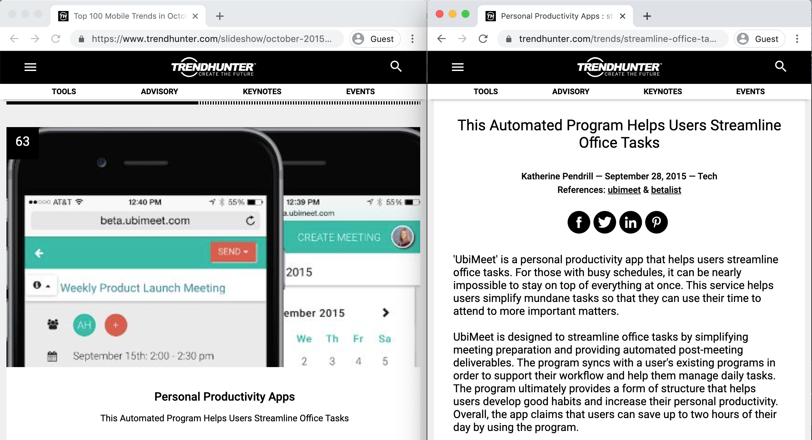

My Role
I served as the non-technical cofounder for a prospective new product. This included initial customer discovery, developing the product positioning and roadmap, establishing a hypothesis backlog, in-product analytics and measuring and reporting back on progress towards achieving product-market fit. Identifying a revenue model as well as pricing was also considered part of this role.
Product Vision
UbiMeet is a personal productivity app that simplifies meeting preparation and automates post-meeting deliverables. It supports your existing workflow, syncing with Google and mobile calendars and pulling in reference materials from Google Drive, Evernote and Dropbox (soon!). UbiMeet provides users the structure and support to develop good habits and increase personal productivity. Users can proactively plan their day through daily morning recaps highlighting upcoming meetings and outstanding action items. Take charge of your day; don't let meetings run you.
Approach
Lean Startup
In late 2014, customer research related to one of ReadyTalk's existing products suggested there may be a broader market opportunity, to focus on in-person as well as remote meetings. I formed a small intrapreneurial team with a developer, and we were tasked with launching this product, following lean startup principles. In addition to exploring the product opportunity, this offered us the opportunity to evangelize lean startup principles within the organization.
As the product lead, I established a hypothesis backlog, as well as target metrics for us to achieve. We used Mixpanel to measure user engagement (having launched our initial MVP within three months of the team forming). I also implemented Intercom in-app messaging and provided all onboarding and customer support for the product.
I conducted qualitative interviews with new and prospective users. We also testing marketing and positioning through A/B tests, and measured user behaviour and performed cohort analysis on the site.
In conjunction with organizational leadership, we established the following key metrics, which I reported on weekly:
- Acquisition: How many new users did we gain this week?
- Activation: How many users become meeting organizers within a month of signing up?
- Retention: How many users have been active within the past four weeks?
- Retention: How many meeting organizers scheduled a meeting within the past week?
- Referral: How many users signed up as a result of someone inviting them?
We would then select one key metric to focus on for the next week's experiment. These metrics had assumptions built into them, and honestly I cringe looking at them now, but at the time we felt that these would be good indicators that we were on the right track to achieving product-market fit.
Measuring Success
Acquisition
Very early on, we seeded the customer base with internal employees (always a questionable decision), to get feedback and gauge usage. This threw off our retention averages as not everyone was a fit for our product, but it did help us in refining our persona segmentation and value proposition. Whereas our organizational leadership had surmised that frequent meeting organizers would find the most value in the tool, our behavioural analytics told us a different story. Adoption and usage was linked more closely to a personality trait than a job title or role.
The other challenge with seeding with internal employees is that we tried to integrate with Outlook off the bat. If you've worked on anything involving calendars before, you know that Google calendar is a dream compared to Outlook. This introduced a lot more technical risk and complexity than we probably should have tackled early on. We still weren't sure if this was a good idea, before trying to tackle a challenging integration right off the bat.
As much as our company leadership would have loved for UbiMeet to be a mandatory tool for every meeting, we knew that would be a huge organizational shift, so a key product principle was that the product should be valuable for individual users, even if others in the meeting didn't use it. So we allowed people to share meeting notes and action items with people who were not current users. Of course, if recipients of emailed notes or agendas wanted to submit changes, they would have to sign up. We felt this was a nice way to balance te differing levels of motivation that individuals may have to contribute.
UbiMeet was a not-so-quiet secret. We did not brand it as ReadyTalk immediately, which allowed us to be slightly more scrappy/unpolished, and also to ensure we were not seeing success as any sort of halo effect from the parent brand. Instead, I engaged with online productivity influencers, we partnered with Erlibird to get beta testers, and we launched on Product Hunt and Betalist, using Prefinery to manage our waiting list and onboarding of new users.

Activation
One of our key metrics was activation, what percentage of meeting attendees started to use UbiMeet to run their own meetings. This was a poor metric, as it ignored the fact that many people who attend meetings don't run their own meetings. This is not an indicator of a shortcoming of the tool. It was these early blindspots that really allowed me to refine my assumptions about the possible reach and application for this product. Was this more of a personal productivity tool than a meeting productivity tool?
Retention
We measured login and usage on a regular basis. One of the early features we added were daily email reminders, that would encourage people to return to the tool and remind them of its value. As well, having a mobile app allowed users to prepare for meetings on the go, rather than being tethered to their desks.
Revenue
We did not worry about a revenue model at the outset. Although I had an goal to identify premium features that could make the product self-sustaining on its own, organizational leadership had always been satisfied to see UbiMeet as a value-add or freemium acquisition channel for their primary conferencing products.
Referral
Although I made the decision not to gate meeting information inside the tool and allow people to send it to non-users, we did want to take advantage of a viral adoption model. We made it simple for users to invite and share agendas and notes from UbiMeet with others, but also for there to be clear benefit to signing up (notably, for meeting organizers). Although we could rely on our parent company to encourage adoption of UbiMeet, I felt that a viral adoption method was a strong indicator of product value. As well, the purpose of this product was to grow our overall customer base (to include even those who don't require remote meeting software), so I knew we couldn't rely on their customer base as our primary source of customers.
Apparently we were also featured on TrendHunter in October 2015 - a discovery I made in 2020 working on this portfolio. Hmm, so I suppose it didn't actually help us all that much when it came to acquisition (otherwise I surely would have noticed..), but it is a nice vanity metric!
Early Product Review
Outcomes
We were seeing slow but steady progress with UbiMeet adoption and usage from the initial team formation in late 2014 through late 2015, when our Chief Strategy Officer asked me to start exploring other product ideas. We had spent nearly a year as a very small team exploring UbiMeet, and the sense was that we should either invest more fully, or divert our resources elsewhere. The concepts and learnings from UbiMeet were rolled into some of our existing products, and I started work on evaluating a new hardware concept, that had a more obvious revenue model associated with it.
While this was a disappointment, we weren't alone. There were several other meeting productivity tools surfacing around the same time (notably, Do.com and Worklife) and neither was able to become independly financially viable. They both were folded into conferencing solutions.
The more obvious success was the shift in organizational culture. The company opened their eyes to new ways to rapidly explore concepts and incorporate feedback from customers. Other product manager started to incorporate Mixpanel, Intercom, Prefinery and Product Hunt into their product management toolset. As well, I was profiled by the Lean Startup Conference organizers and invited to speak at their 2015 conference about our experience following this approach.